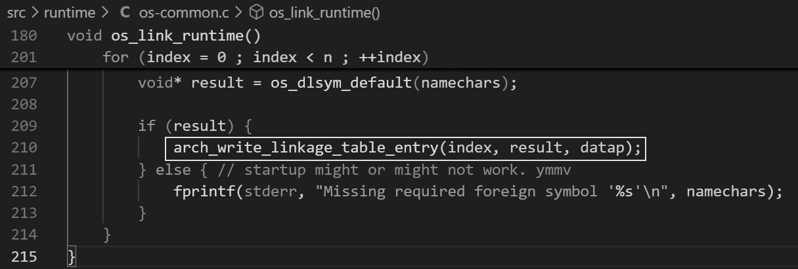

| v2025.3.18 Github | |
| Common Lisp Sepecfication | ANSI规范了Common Lisp的语言核心，自1999年发布之后就没有再进行更新。两个在线的网站都可以查看 https://www.lispworks.com/documentation/HyperSpec/Front/Contents.htm https://franz.com/support/documentation/11.0/ansicl/ansicl.htm |
| Common Lisp资源汇集 | |
| Common Lisp的实现 | 目前常见的Lisp实现有
这里可以找到更多实现：Common Lisp Implementations |
| 我应该选择哪个实现 | 各种实现在规范的基础上完成对Common Lisp的实现，并加入各家独自的扩展，如加入ffi支持，多线程支持等 后面的内容我们使用SBCL这个实现。 |
| 我能找到一些参考的例子吗 | 可以，The Common Lisp Cookbook 这本在线的书籍提供了很全面的内容 从基本的语法到如何调用外部库，进行性能优化，都有对应的例子 |
| 我能使用Common Lisp进行GUI编程吗 | SBCL 支持一些GUI库的绑定，例如tk的绑定ltk，Qt的绑定等。 LTK如何工作比较简单的是ltk ltk的绑定方式是使用(run-program)开启一个wish进程，然后使用socket和这个进程进行通信，从而控制wish绘制出图形界面。 这个连接提供更多信息 ltk - A binding for the Tk toolkit. LLGPL or GNU LGPL2.1. |
| 如何调用外部的函数？例如用C语言导出的动态链接库 | 这件事情需要使用由Common Lisp实现所提供的外部函数接口完成。 在SBCL中，这个功能由sb-alien库提供，你也可以使用Common Lisp通用的cffi库
|
| package有什么用 | 可以通过名字在package中查找symbol，例如可以在cl这个package中找到ANSI预定义的symbol 使用*package*变量可以获取到当前所在的package |
| load和require的区别是什么 | load直接加载源码并运行 require会检查*modules*这个变量，如果存在了就跳过加载 |
| ASDF，quicklisp是什么 | ASDF是用来构建和加载Common Lisp程序的工具，它知道依赖但不会给你自动下载 quicklisp在ASDF基础上构建的工具，它可以自动下载所需的依赖，可以用来导入新的库 比如，你需要使用str这个库，你可以(ql:quickload "str") |
| quicklisp是怎么工作的，我启动sbcl后它为什么有效 | 在用户目录下，存在一个.sbclrc文件，quickload安装时会写入一些内容到其中 ;;; The following lines added by ql:add-to-init-file: #-quicklisp (let ((quicklisp-init (merge-pathnames "quicklisp/setup.lisp" (user-homedir-pathname)))) (when (probe-file quicklisp-init) (load quicklisp-init))) sbcl启动时会自动加载这个文件 |
| sbcl的runtime提供了什么 | sbcl.exe是windows上的runtime sbcl.core是lisp源码编译后得到的镜像文件，里面存放了机器码和其它信息 sbcl负责加载sbcl.core到内存，并为sbcl.core镜像的运行提供了可调用的一些列函数接口。 例如，windows上loadlibrary这个函数就是sbcl.exe加载win32.dll后通过将Windows的LoadLibray函数地址放在了sbcl.core能访问到的内存地址上 --- src\code\win32-foreign-load.lisp--- (define-alien-routine ("LoadLibraryA" loadlibrary) hinstance (file c-string)) sbcl.exe会在启动时加载kernel32.dll  * When the runtime loads the core (cold-sbcl.core initially, |
| type和class | type和class对可以用来给对象进行分类，type只是简单的给编译器提供标签信息，class能存储slots和method 可以使用deftype,defstruct来定义新的type 使用defclass可以用来定义class，使用make-instance实例化class * (setq x (defclass c1 () () )) * (make-instance 'c1) |
| type specifier | 内建的基本type有integer,float等 可以使用or，and这些进行逻辑组合，得到的还是type specifier
|
| sbcl的runtime和sbcl.core是如何编译出来的 | 1. 找到一台拥有c编译器和common lisp运行环境的计算机 2. 先运行make-config.sh生成配置信息 3. 使用host1.sh启动common lisp编译部分lisp源码得到xc交叉编译器,genesis和用于c编译的信息 4. 使用target1.sh生成sbcl.exe,同时grovel-headers.c被编译运行产生stuff-groveled-from-headers.lisp 5. host2.sh 运行xc编译部分sbcl的源码和上面生成的grovel lisp文件，得到fasl 6. genesis.sh 使用第3步的genesis来模拟加载第5步得到的fasl生成cold-sbcl.core 7. 使用生成的sbcl.exe加载cold-sbcl.core，编译sbcl源码得到最终的sbcl.core |
| sbcl可以直接在机器码层面上编程吗？ | 可以。SBCL 作为 Common Lisp 直接到机器码的编译器实现，可以说十分擅长在 Lisp 程序里插入汇编程序段。 |
| sap | SBCL提供了SAP（System Area Pointer),可以直接操作物理内存， the lower-level System Area Pointers (or SAPs) can be used where necessary to provide untyped access to foreign memory.
sb-sys:int-sap machine-address [Function] Creates a SAP pointing at the virtual address machine-address.
sb-sys:sap-ref-32 sap offset [Function ] Access the value of the memory location at offset bytes from sap. This form may also be used with setf to alter the memory at that location.
sap的实现是直接生成机器码 参考 sbcl手册的9.3.1.1 Untyped memory |